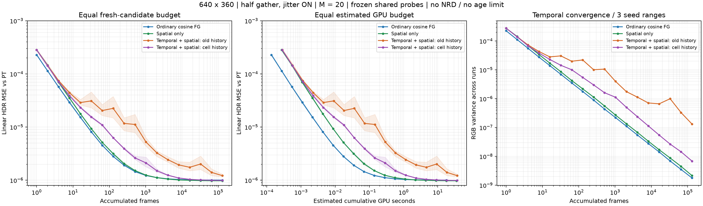
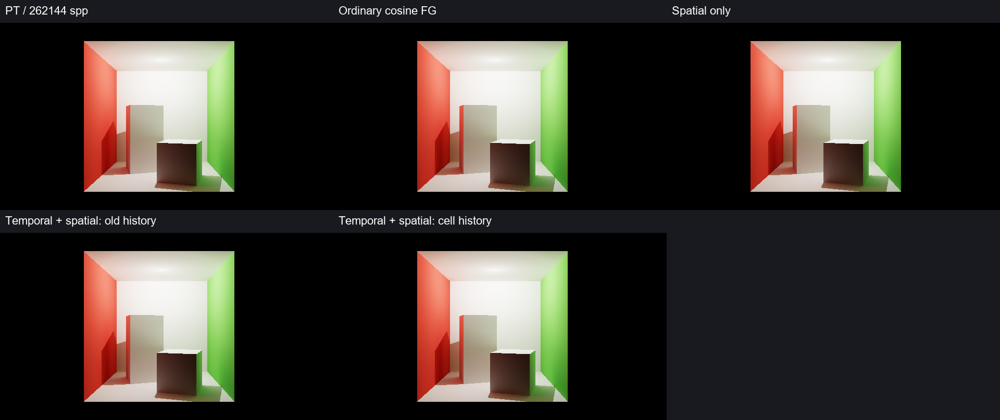

对照 NVIDIA 后，确认了两处流程差异：历史匹配策略，以及是否反馈空间 reservoir。隔离试验表明，本场景退化主要与半分辨率 jitter 下的历史选取有关；不能简单归因于 M 少乘一次、多除一次。
修正后的三序列长测试通过实用稳定标准，131072 帧 MSE 为 9.90016e-07，相对旧时间复用降低约 18.8%。但前期收敛及相同 GPU 时间下仍落后于普通 FG，不能宣称已获得收敛提速。
旧版在上一帧移动采样格点附近搜索世界坐标最近的 reservoir。新版先把重投影屏幕位置映射到所属粗像素，优先使用该格；表面匹配失败才按随机起点搜索邻居。静止相机下，四相位 jitter 不再驱动粗像素之间的最近点争抢。保留原 M=20、亮度 target、Jacobian、归一化公式与可见性检查。样本年龄限制在匹配到历史后判断，不再因某历史过老而换用另一邻居（年龄上限默认仍关闭）。
“多个像素选中相同历史会增强相关性”是对退化机制的解释；本次未追踪完整样本谱系，未给出碰撞率统计。关闭 jitter、缩短历史和单独修改映射的隔离结果支持这一判断，但不构成严格无偏性证明。
官方源文件：TemporalResampling、Reservoir、GI buffer indices、sample target。
legacy：原映射；feedback：仅开启空间反馈；initial：无时间/空间复用；temporal：只开时间；static-origin：关闭 jitter；short-history：M=2；history-one：M=1；cell-only：只改所属粗像素映射；cell-feedback：映射＋空间反馈；cell-temporal：映射＋仅时间复用。static-origin 改变了采样位置及重建条件，属于诊断项，不作为完全相同条件的画质排名。
| 方案 | MSE vs PT |
|---|---|
| legacy-0 | 1.62293e-06 |
| feedback-0 | 1.21071e-06 |
| initial-0 | 1.00142e-06 |
| temporal-0 | 1.94824e-06 |
| static-origin-0 | 9.90938e-07 |
| short-history-0 | 1.00125e-06 |
| history-one-0 | 1.00142e-06 |
| cell-only-0 | 1.01249e-06 |
| cell-feedback-0 | 1.07919e-06 |
| cell-temporal-0 | 1.19376e-06 |
输出 640×360、gather 320×180，Lambert Cornell。每组 probe 预热 8192 帧后冻结，逐位一致已验证；清空 reservoir 和 Accumulate 后测量。三个种子偏移 0、131072、262144，各累积 131072 帧。年龄限制、全分辨率积分、NRD 均关闭。复用之前的独立 262144 spp 未降噪 PT 参考及同条件普通 FG/空间复用/旧时间复用数据。误差只统计场景 mask 内的线性 HDR RGB；HDR-FLIP 全组使用相同曝光参数、ACES、67 PPD。表中的 GPU 耗时为冻结 probe 时整个渲染图耗时；时间轴按耗时×帧数估算。

| 帧数 | FG MSE | 空间 MSE | 旧时间 MSE | 新时间 MSE |
|---|---|---|---|---|
| 16 | 1.52763e-05 | 1.78637e-05 | 2.89155e-05 | 2.33915e-05 |
| 256 | 1.91477e-06 | 2.04285e-06 | 1.17335e-05 | 3.93263e-06 |
| 4096 | 1.06199e-06 | 1.05377e-06 | 2.43887e-06 | 1.24501e-06 |
| 32768 | 1.01078e-06 | 9.84363e-07 | 2.0209e-06 | 1.0127e-06 |
| 131072 | 1.00719e-06 | 9.76846e-07 | 1.21922e-06 | 9.90016e-07 |
| 方案 | MSE | HDR-FLIP | GPU ms | 末次翻倍 MSE 变化 | 实用稳定 |
|---|---|---|---|---|---|
| Ordinary cosine FG | 1.00719e-06 | 0.047997 | 0.1360 | -0.18% | 通过 |
| Spatial only | 9.76846e-07 | 0.047125 | 0.2706 | -0.22% | 通过 |
| Temporal + spatial: old history | 1.21922e-06 | 0.049631 | 0.2832 | -13.22% | 未通过 |
| Temporal + spatial: cell history | 9.90016e-07 | 0.047247 | 0.2810 | -0.88% | 通过 |
实用稳定标准沿用上次：连续两次翻倍 MSE 变化均小于 2%，末次平均图变化小于对 PT 误差的 1%，平均图随机误差估计小于总误差的 5%。它不是无偏性证明。曲线阴影为三组结果的最小到最大值。原始两组 64 帧时间方差窗口与序列间方差见 summary.json。
展示单序列，统一 +3 EV、ACES，未降噪。

数据：build/restir-temporal-audit、restir-temporal-cell-audit、restir-temporal-verified。脚本：tests/ddgi/restir_temporal_audit.py、restir_temporal_cell_audit.py、restir_temporal_verified.py、score_restir_temporal_audit.py。机器可读结果。ReSTIR 总开关保持默认关闭。